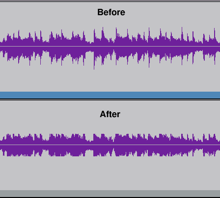
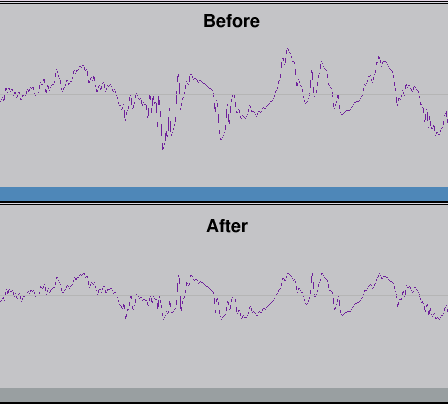

|
TAP-plugins Tom's Audio Processing plugins for audio engineering on the Linux platform |
|
[ TAP AutoPanner ] [ TAP Chorus/Flanger ] [ TAP DeEsser ] [ TAP Dynamics (Mono & Stereo) ] [ TAP Equalizer and TAP Equalizer/BW ] [ TAP Fractal Doubler ] [ TAP Pink/Fractal Noise ] [ TAP Pitch Shifter ] [ TAP Reflector ] [ TAP Reverberator ] [ TAP Rotary Speaker ] [ TAP Scaling Limiter ] [ TAP Sigmoid Booster ] [ TAP Stereo Echo ] [ TAP Tremolo ] [ TAP TubeWarmth ] [ TAP Vibrato ]
You want to maximize the loudness of your master tracks. Your drummer has the habit of playing with varying velocity. You want to squeeze high transient spikes down into the bulk of the audio. You want a limiter with transparent sound, but without distortion. This is for you, then. The unique design of this innocent looking plugin results in the ability to achieve signal level limiting without audible artifacts.
Most limiters operate on the same basis as compressors: they monitor the signal level, and when it gets above a threshold level they reduce the gain on a momentary basis, resulting in an unpleasant "pumping" effect. Or even worse, they chop the signal at the top. This plugin actually scales each half-cycle individually down to a smaller level so the peak is placed exactly at the limit level. This operation (from zero-cross to zero-cross) results in an instantaneous blending of peaks and transient spikes down into the bulk of the audio.
| Unique ID | 2145 |
|---|---|
| I/O ports | 1 input / 1 output |
| CPU usage (44.1 kHz) | 0.5% (see Notes) |
| CPU usage (96 kHz) | 1.1% (see Notes) |
| Hard RT Capable | No |
| In-place operation | Supported |
| run_adding() function | Provided |
Although this limiter is an exceptionally clean sounding one, it is possible to introduce distortion by setting the limit level down into the bulk of the audio. Only transients, drum beats and such things (which "stand out" of the waveform) should be attacked. To illustrate the optimal setting of this plugin, let's look at the following waveforms (seemingly some unmastered rock music):
As you can see, no signal gets above the limit level, so this plugin acts as a brickwall limiter (with a compression ratio of inf:1 above the limit level). But the two waveforms above sound exactly the same! This is possible because transients last for a very short amount of time, and despite their high level, they don't carry very much energy compared to the bulk of the audio. Now let's take a closer look at the same waveforms:
As it can be seen, the waveform does not lose any of its details, because half-cycles (from zero-cross to zero-cross) are individually scaled down to the limit level (only those that have peaks above the limit, of course).
When setting the "Limit Level", you should not go more than 7-8 dB below the average peak level of the signal, which should be observed via some peak-holding level meter. When using this plugin in Ardour, this can be done very easily because the meters of the mixer strips provide an excellent way to monitor exact peak values. Assuming an unmastered mix of some rock music with drums, bass, guitars etc. you can usually get down to the point where the Ardour level meter doesn't move very much. Without hearing any distortion, of course. Because high transients are squeezed down, the overall signal level can be raised with the "Output Volume" control. Thus, this plugin is a very effective way to transparently maximize the loudness of your mixes.
| name | min. value | default value | max. value |
|---|---|---|---|
| Limit Level [dB] | -30 | 0 | +20 |
| Output Volume [dB] | -30 | 0 | +20 |
| latency | latency time is 12.5 ms, value depends on sample rate |
||
This plugin has a processing function that examines the input audio signal and makes decisions based on sample values. So by definition, this plugin cannot qualify as hard RT capable, although CPU demand tends to be fairly constant during usage.